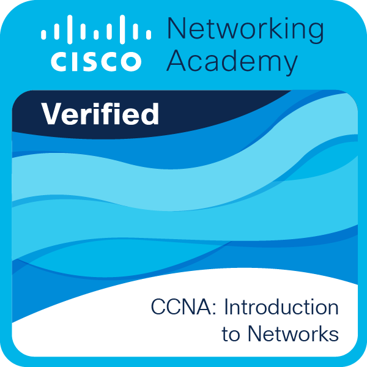
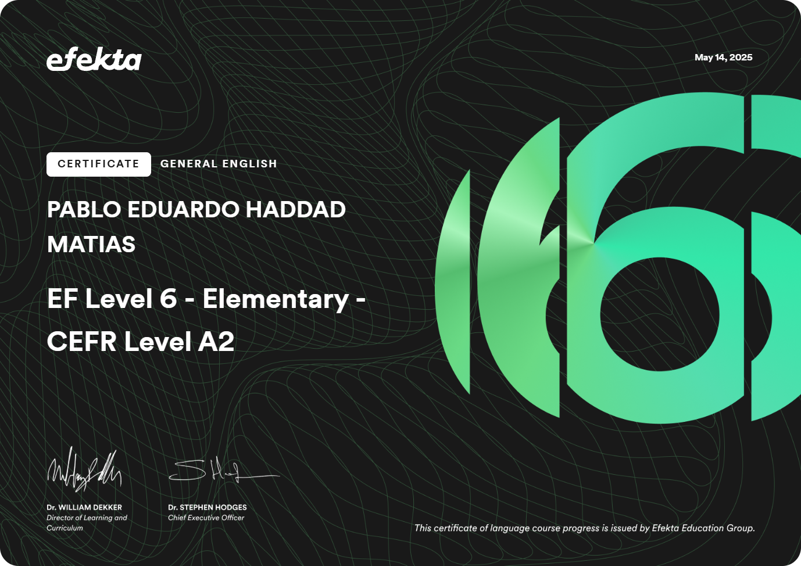
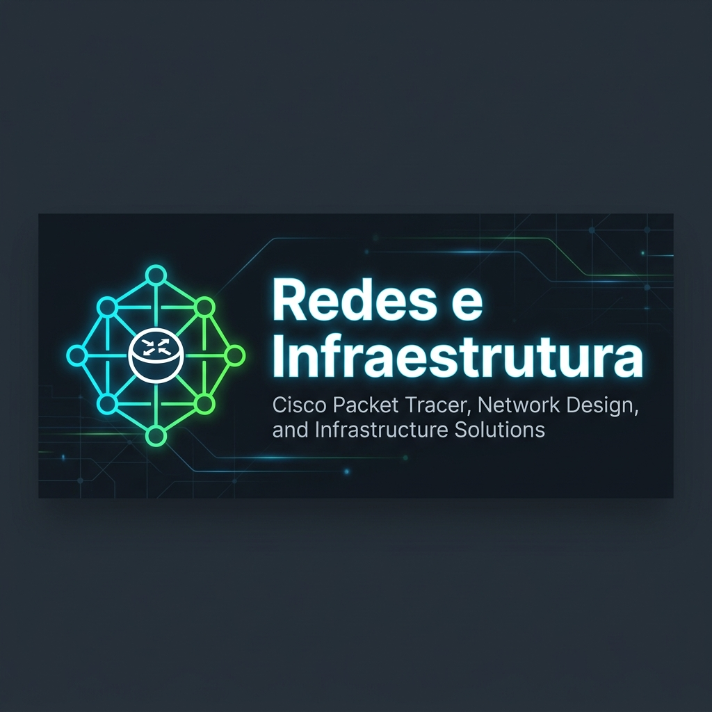
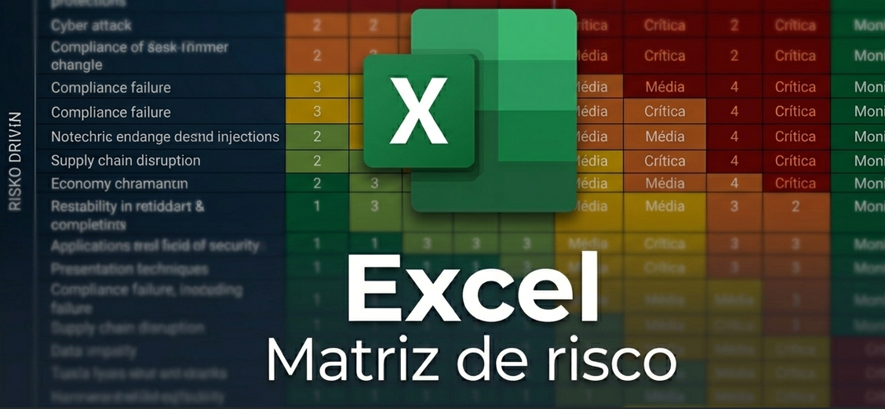

PORTFÓLIO TÉCNICO — PABLO EDUARDO
Análise Real de Vulnerabilidades e Defesa Cibernética
Pablo Eduardo — Analista de Cibersegurança
Portfólio focado em análise prática de sistemas, identificação de vulnerabilidades e simulação de cenários reais de segurança em ambientes controlados.
Profissional Verificado e Certificado pela Cisco Networking Academy

SOBRE MIM

Pablo Eduardo
Defesa Cibernética
Estudante e desenvolvedor focado em cibersegurança, análise de vulnerabilidades e criação de ferramentas. Meu foco é entender como sistemas falham, identificar riscos reais e aplicar estratégias defensivas eficazes.
Certificações
Redes & Segurança Cibernética
Configuração de redes Cisco, protocolos de internet e segurança de servidores. Foco em deixar a infraestrutura protegida e funcionando.
Segurança da Informação
SENAC SorocabaCCNA: Introdução a Redes
Cisco AcademyOperações de Redes de Computadores
SENAC SorocabaGovernança, Riscos & Conformidade (GRC)
Estudos e certificados voltados para leis de privacidade (LGPD), proteção de dados corporativos e regras de mercado.
Idiomas & Ferramentas
Competências essenciais para o dia a dia, como inglês, uso do Excel e metodologias de organização de projetos.

General English (A2)
EfektaExcel & Ferramentas de Produtividade (Informática Básica)
SENAIExperiências e Conquistas
Sage Networks
Participação em avaliação técnica realizada durante evento do NIC.br, com foco em infraestrutura e tráfego de rede. Resultado: acerto integral das 50 questões propostas. Durante o evento, tive a oportunidade de interagir diretamente com o CEO da empresa, registrando o momento após o resultado.
Cases
Desenvolvimento de arquiteturas de redes seguras, matrizes de risco e soluções focadas na conformidade regulatória e mitigação de vulnerabilidades sistêmicas.

Case Atlântica Financeira: Engenharia de Hardening e Remediação Perimetral
Arquitetura Zero Trust e Remediação Perimetral de Redes
Implementação de segmentação lógica por VLANs (IEEE 802.1Q) e análise de tráfego em ambiente corporativo crítico. O projeto executa o isolamento restritivo de ativos IoT/Wireless e a blindagem de perímetros internos utilizando regras avançadas de Firewalls de borda (ACLs Estendidas) para eliminação de vetores de movimentação lateral.
Case SkyBoom: Hardening de Borda com Docker e Autenticação Nginx Proxy
Gateway Seguro para Gerenciamento Administrativo via Docker e Nginx
Desenvolvimento de uma solução de Hardening de borda para garantir que o acesso dos usuários administrativos ocorra de forma criptografada e isolada. Utilizando Nginx Proxy e Docker, a arquitetura protege credenciais com criptografia forte ($apr1$), mitiga o risco de vazamento de senhas em arquivos locais de histórico (.bash_history) por meio de capturas ocultas e realiza o ajuste fino de permissões restritas no Kernel do Linux.

Case Atlântica Financeira: Matriz de Risco e Governança Corporativa
Matriz de Riscos Quantitativa e Governança de GRC
Mapeamento e categorização de ameaças cibernéticas críticas como ataques de Ransomware, Shadow IT, Engenharia Social e Não-Conformidade regulatória (LGPD/BACEN). O projeto aplica a metodologia ETP para cálculo de severidade e probabilidade, estruturando controles defensivos operacionais adaptados ao ecossistema financeiro.
Entre em Contato
Tem alguma dúvida ou proposta? Preencha os campos abaixo para me enviar uma mensagem direta.